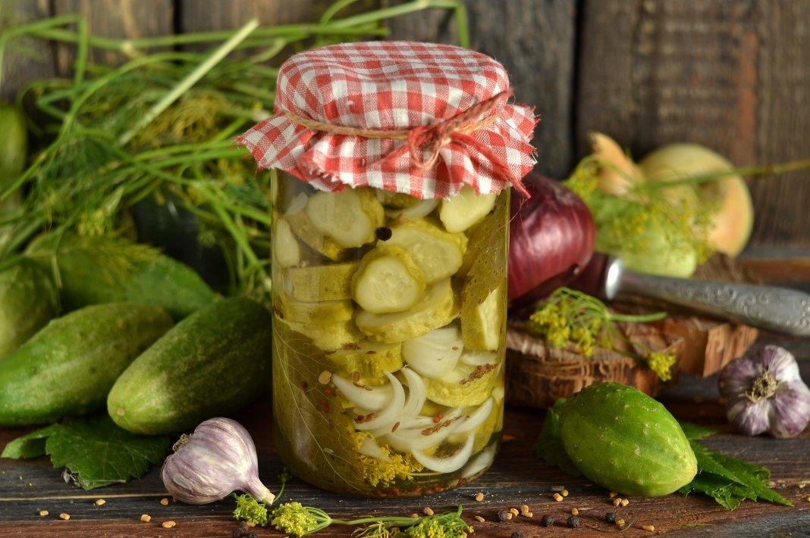

Рецепти салатів на зиму з ніжинських огірків
Ніжинський салат був винайдений на однойменному заводі в радянські часи. Закуска отримала величезну народну любов і досі готується українськими господинями. Поєднання солоного огірка і консервованої цибулі дуже просте, але надзвичайно смачне. Підходить до м'яса і ковбасок, а також як закуска до спиртного.
Ніжинський салат на зиму зі стерилізацією
Складові
- Огірки - 1 кг.
- Цибуля - 0,5 кг.
- Цукор - 0,5 чайна л.
- Перець горошком - 6 шт.
- Сіль - 2 чайні л.
- Оцет 9% - 1 столова л.
- Кріп - 50 г.
Щоб салат був красивим, бажано відібрати однакові за розміром огірки. Промити огірки і замочити на ніч у холодній воді (так вони стануть хрусткими). Нарізати огірки тонкими кільцями. Лук нашаткувати тонкими півкільцями. Кріп дрібно нарізати разом зі стеблом. Змішати цибулю, огірки і кріп в одній мисці. Простерилізувати банки і кришки. У кожну банку викласти по 1-2 горошині перцю. Наповнити банки огірками і щільно утрамбувати. У кожну банку порівну всипати сіль і цукор, влити оцет. Залити кожну банку окропом по горлечко.
Поставити банки з салатом в розігріту до 100° духовку на 5 хвилин. Потім збільшити температуру до 120° і стерилізувати ще 10 хвилин. Дати салату охолонути і закатати кришками. Зберігати в прохолодному місці.
Ніжинський салат на зиму без стерилізації
Складові
- Огірки - 3 кг.
- Цибуля - 1 кг.
- Оцет 9% - 100 мл.
- Соняшникова олія - 100 мл.
- Цукор - 4 столові л.
- Сіль - 2 столові л.
- Перець духмяний горошком - 3 шт.
- Перець чорний мелений - 0,5 чайні л.
- Лавровий лист - 3 шт.
Огірки вимити і замочити в холодній воді на 3 години. Нарізати огірки тонкими кільцями. Цибулю нарізати тонкими півкільцями. Змішати у великій мисці огірки, цибулю, цукор, сіль і мелений перець. Залишити овочі на 1 годину, щоб вони пустили сік.
Влити олію до овочів і поставити на плиту. Довести до кипіння і варити овочі 10 хвилин. Додати оцет і відразу зняти з вогню. У чисті банки викласти по одному горошку перцю і лавровому листу, а потім утрамбувати салат. Закрити салат прокип'яченими кришками. Накрити банки товстою ковдрою до повного охолодження.